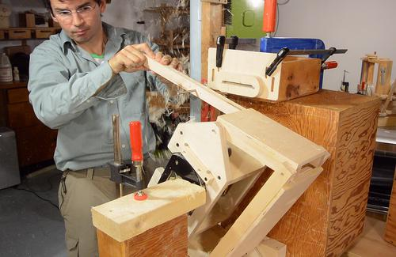

Building the pantorouter XL pantograph
A frequently asked question from readers wanting to build the pantorouter is where to get that style of router. This style of router, with a motor that pulls out of interchangeable bases (like this one) is hard to find outside of North America. This is probably because other countries require that the router turn off when you let go of the handle, and that necessitates putting the switch on the handles, and that's difficult to do with the motor detaching from the base and handles.{kind=link}
{kind=link}
Outside of Canada and USA, except for a few brands and models, routers are plunge routers, with the body and handles often consisting of one piece. This type of router is too bulky to fit into the pantograph mechanism of my original pantorouter design.
{kind=link}
So I designed the "Pantorouter XL", which has a larger pantograph mechanism for mounting a plunge router, complete with handles, in the pantograph.
{kind=link}
I printed out my plans, including a sheet (pasted together from many pages) with a lot of the parts in full size using my BigPrint program.
{kind=link}
The long parts of the pantograph link are made from hard maple. Here, I'm cutting the parts out of a piece of firewood.
{kind=link}
Marking where the holes need to end up. These measurements are very critical.
{kind=link}
I'm marking both holes from the same end as a reference, to make sure the spacing is exactly right.
{kind=link}
The links will pivot on some 3/16" (5 mm) steel rod. Getting holes of just the right fit is important. I drilled some test holes with different 3/16" brad point bits, but these all drilled slightly oversized, resulting in a fit that had a tiny amount of play in it.
{kind=link}
The smaller the shafts are, the more easily the links pivot. But since building it, I realized I should have made the long shaft that the whole pantograph mounts on 1/4" (6 mm), as that shaft is prone to flexing. But I think it's best to keep the other pins at 3/16" or 5 mm.
I have updated the drawings to reflect this, but in my build video series, it's still a 3/16" shaft.
I ended up drilling the holes at 15/64 (1/64" or 0.4 mm smaller than I needed), and then drilling the holes to final size using a regular (not brad-point) drill bit.
{kind=link}
This resulted in a very tight fit with the rod, which is what I was aiming for.
The plywood pieces for the links are cut from Baltic birch plywood. Here I'm getting ready to assemble them.
{kind=link}
Freshly applied glue is very slippery, so to keep parts aligned, I clamp on one of the long pieces to the plywood without any glue, then apply glue to the thinner bottom layer...
{kind=link}
... and glue on the next (18 mm) thick layer, using the clamped-only piece to help align it.
{kind=link}
Next I glue on the other long piece of hardwood.
One side of this has a 3/16" hole, the other a 1/4" hole. Make sure both of the larger holes are on the same side! The same goes for the short link.
I gave it a few minutes, the glue on the first joint set sufficiently to no longer slide around. Then I removed the first (clamped but not glued) piece of hardwood, and clamped on the second piece.
{kind=link}
I wanted to remove that first piece of hardwood, otherwise, the glue that squeezed out from gluing on the plywood would have made it very difficult to remove later.
I used the same procedure to glue up the short pantograph link.
{kind=link}
While waiting for the glue to dry, I can cut out the pieces of plywood for the router mount. As with the other plywood in this machine, I'm using baltic birch plywood, which is made of thin layers of birch throughout.
{kind=link}
Rather than follow the dimensions in the CAD drawing, it's best to use the geometry of your router base instead. This will make it easier to fit the router later.
{kind=link}
Cutting out the pieces on the bandsaw.
{kind=link}
With the glue dry enough, I can now glue on the other rail to the pantograph links (the rail that I initially only clamped but not glued on).
{kind=link}
It's very important that the pieces align laterally. Here, I'm checking that alignment with a square.
My original pantorouter has the control lever as a solid piece of wood, but on this pantograph, the control lever would need to be much wider, and it would be hard to drill the holes for the pins straight through. So I made the control lever link similar to how I made the other pantograph links.
{kind=link}
I ended up making it twice though, because the first one I first made was too easy to twist, as I found out later. So I made the long rail of it 25mm wide instead of 18mm and extended the plywood a bit further. The video shows me making the non-beefed-up version, because I didn't realize I should beef it up until after I uploaded the video, and it's always a bad idea to re-upload a nearly identical video.
The dado cut out of the plywood is for the pin that it pivots on to go through. (the rails on either side have a hole right where that dado cut is)
{kind=link}
Both pins that the control lever hinges on are 3/16" or 5 mm, so there's no need to worry about putting the link on backwards.
Cutting up some pieces of 3/16" (5 mm) steel rod for three of the pivot pins.
{kind=link}
The main pivot on the bottom (28.2 cm long) is 1/4" or 6 mm in diameter. The 3/16 or 5 mm rods are 18.2, 15.7 amd 15.7 cm long.
With the pins fitting in the links very tightly, I made a sort of reamer out of a piece of the steel rod, by cutting a lengthwise slot near the end with a hacksaw.
{kind=link}
 I then used that steel rod in a drill to expand the holes for a very snug and only
slightly tight fit.
I then used that steel rod in a drill to expand the holes for a very snug and only
slightly tight fit.
The holes are not necessarily perfectly aligned with each other, so I take the reamer, push it through the hole on one side, and then into the hole on the other side. I do this coming in from both sides to get both holes into alignment.
A number of people have "improved" on my design by drilling larger holes and using bronze bushings in the holes. But that means you can't use this trick to get the holes fully aligned. The bronze bushings do last longer. A steel rod in a wooden hole might wear out after cutting as few as ten thousand joints. But if you are at all concerned about wear, put oil in the holes and polish the rods, and it should last much longer.
First test assembly of the pantograph mechanism.
(note: showing my not-final design of the control lever)
{kind=link}
Fitting that blue Ryobi plunge router is a challenge. The handles are not detachable and very bulky. I first thought it wouldn't fit (with the pantograph tilted by just over 45 degrees from square).
{kind=link}
But then I realized, in my design, the pantograph only needs to tilt by 30 degrees off square. Here I added some blocks of wood below the router mount to limit the tilt to just over 30 degrees off right angle.
{kind=link}
At that tilt angle, the handles do not interfere with the links - though they do interfere with the back plate.
{kind=link}
The pantograph needs to be mounted on a base, and the base has two corners cut away to fit in the machine, as designed. I mostly cut these on the table saw, then finished the corner cuts on the bandsaw.
{kind=link}
{kind=link}
Drilling the holes in the mounting blocks for the pantograph.
{kind=link}
These need to be very square. To compensate for any non-square-ness that my drill press may have, I drill the hole about 5 mm in then rotate the block 180 degrees (around the axis of the drill bit) and drill another 5 mm, repeating until I'm all the way through. If the drill press table has any tilt error, every 180-degree rotation effectively reverses that.
But one of the holes was still not quite square. The piece did not lie flush against the pantograph link once it was on the shaft. So I drilled another hole, and another, and by the fourth hole, I had one that was sufficiently square. I think the grain of the wood, running diagonally, pulled the drill to the side a little.
{kind=link}
I have to make sure the axis of the pantograph is exactly square to the back and parallel to the sides. I start by marking a line with a square.
{kind=link}
A pencil mark, directly below the hole, on the link, allows me to line it up.
{kind=link}
I then mark the hole locations by inserting screws in the holes, and tapping them down with a hammer. The point of the screws makes a divot in the wood to mark where to drill the pilot holes.
Getting the location for the front mount. I used two scraps of 18 mm birch plywood as spacers behind and in front of the pantograph to leave sufficient room for the spring cams that will help compensate for the weight of the router later.
{kind=link}
I lined up the front mount to the pencil line the same way as the back one. Then, inserting screws in the holes, and tapping the screws with a screwdriver and hammer, I mark the locations.
{kind=link}
{kind=link}
I find the drywall screws I use fit exactly in a 9/64" (3.57 mm)hole. I'm drilling the pilot with a 7/64" (2.78 mm) diameter.
{kind=link}
 Some scraps of wood with slots cut in them will ensure the pantograph doesn't
slide forwards and back for now.
Some scraps of wood with slots cut in them will ensure the pantograph doesn't
slide forwards and back for now.
Although the Ryobi router would fit, I used another plunge router with a broken switch. With a broken switch, that router wouldn't be of much use for other jobs anymore.
{kind=link}
Most people mount routers in jigs by screwing the base to a piece of plywood. This method would work for this mount as well, but I'd lose a little bit of depth of cut. So instead, I'm mounting it by two metal rods. Nearly all router bases have holes for two metal rods, for use with various jigs.
The metal rods need to be mounted to the front of the router mount. Here, I'm drilling two holes in two pieces of wood at exactly the right distance for the two metal rods.
{kind=link}
After that, I slice off part of the blocks, so that I have about 0.5 mm of the hole cut away.
{kind=link}
I used a compass to mark the same distance from each hole to make sure I had the center between the two holes, then lined that up with a center line on the front mount. This will ensure that the router's collet will end up on the center line between the two pivot points.
{kind=link}
I put screws in the screw holes, tapped them with a hammer, then used the divots from that to drill pilot holes for the screws in the plywood.
This mounts the router securely to the front part of the mount, but I need support to keep the front from pivoting. So I made some pieces of plywood that reach around the router's handles. With this router, I could have just unscrewed the handles as well.
{kind=link}
{kind=link}
Now installing the router mount in the pantograph.
{kind=link}
It turns out, the pieces of plywood to link the front and back hit the pantograph links, and I couldn't quite tilt it 30 degrees off-square. But it was only a little bit off, so just chamfering the edges of the plywood pieces that hit the links allowed me to get 30 degrees tilt again.
{kind=link}
 I'm still missing the template holder, stock holding table, plunge mechanism, and other bits. But the pantograph is the core of the machine, and I was keen on trying it out. So I used some wooden boxes to hold the template and stock.
{kind=link}
I used a follower and template that I made earlier.
Big tenon milled out. Looking good.
{kind=link}
Next: Linear glides (for the plunge mechanism)
Back to Main index